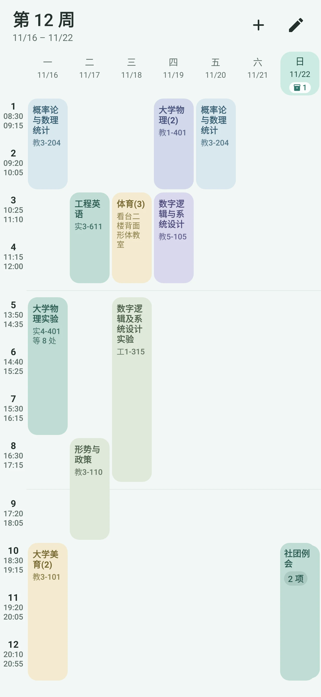
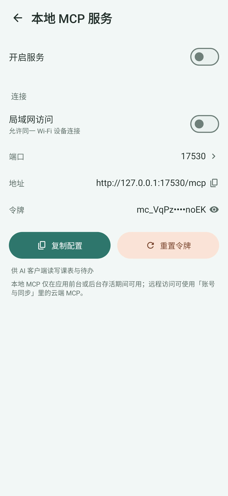

空教室与 7×12 周课表
按教学楼与节次检索当前空教室；点入即可查阅整周排课，自动叠加个人课表避开冲突，空白处长按框选新建日程。
安装包仅 3.83 MiB，无广告，数据只留在你的手机里。统一认证同步课表，把 7×12 空教室、均绩体测、快递取件与 5 款桌面小组件收进同一处。




下节课教室、今日安排、待办事项、取件码与考场座位号，留在桌面即可查阅。点击下方卡片聚焦预览。
进入教3-101 的 7×12 周课表时，个人课表会自动叠加对照。在右侧 周四 6–7 节空位 按住下拉，松手即可记为日程。

围绕广工教务流程与日常节奏设计，克制集成，不添冗余。
按教学楼与节次检索当前空教室；点入即可查阅整周排课，自动叠加个人课表避开冲突，空白处长按框选新建日程。
清晰统计已修与总学分，支持按学期与课程性质筛选，轻点单科即可临时排除并重算加权均绩。
桌面上的 今日 与 下一日程 小组件直接呈现考场教室与座位号（如 教1-203 · 18座），考前无需翻找。
AES 加密直连统一认证导入整学期课表，自动折叠多机房实验课，支持周增量更新、单周调课与各学年体测明细查询。
内置广工各校区作息时间表，单门课程可独立指定节次时间，调课与选修互不干扰。
今日、课表、日历、待办、我的五栏清晰分区；内置 6 套低饱和主题与 8 种课程色块，完整支持深色模式与壁纸动态取色。
底部单行输入自动解析日期时间（如「周三晚八点开会」）；本地规则识别驿站短信并提取取件码，轻点即可复制。
上课时段自动开启勿扰，内置常见系统后台权限自检；支持系统日历双向同步与标准 .ics 导入导出。
批量排课与整理待办，在电脑浏览器里更从容。数据默认留在手机，也支持自建同步服务与 AI 接口。


开启手机局域网开关，同一网络下打开电脑浏览器即可大屏编辑课表与待办；纯本地加载，零外链依赖。
附带单二进制开源服务端，适合多设备同步与长期网页访问，同时支持整库 JSON 一键备份还原。
通过本地或自建 MCP 服务接入 AI 客户端读写日程；QuickJS 沙箱支持批量调停课，修改前可预览差异并随时撤销。
按分类筛选或切换深浅模式，点击任意截图放大查看细节。